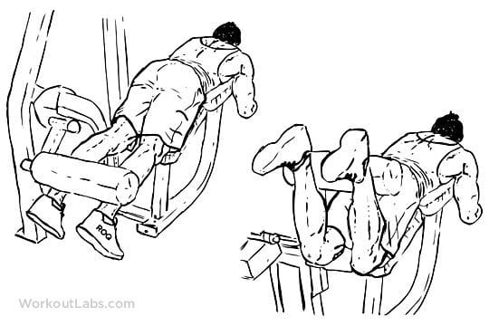

Leg Press
Leg presses are seated exercises done on a leg press machine.
To start, sit with your back against a padded backrest and your feet on two large footrests. Your knees are bent to start the exercise. To move the weight, you must straighten your legs and then return them to the bent position
Seated Calf Raise Machine
Take a seat on the machine and place the balls of your feet on the platform with your toes pointed forward - your heels will naturally hang off. Position the base of quads under the knee pad and allow your hands to rest on top. Extend your ankles and release the safety bar.
Leg Curl Machine

The leg curl machine, similarly known as the hamstring curl, is one of the better isolation exercises for the hamstrings. The lying leg curl works the hamstrings similarly, and the leg press is popular, but it's also a compound exercise.
Leg Extension Machine
Leg extensions are done on a leg extension machine. You sit on the machine with a weighted pad on top of your lower legs. Then you use your quads to repeatedly extend your knees and lift your lower legs. While the leg extension is a great quad workout, it might not be the most practical move.
Dumbbell lunges
Inhale and take a big step forward with your right leg, landing on the heel.
Bend at the knee until the right thigh approaches parallel to the ground. ...
Step the right foot back on an exhale to return to the starting position.
Repeat the motion with the left leg.